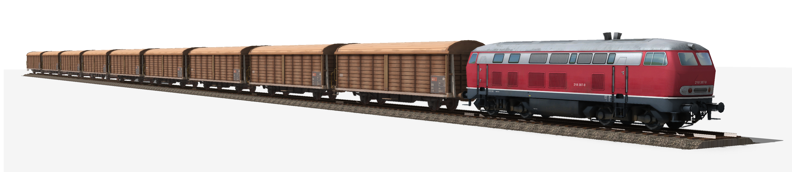

Единый государственный перспективный план развития народного хозяйства на базе электрификации разрабатывался с начала 1920 г. комиссией в составе 22 учёных, в помощь которым привлекалось более 200 специалистов по различным отраслям народного хозяйства. Руководил разработкой плана ГОЭЛРО известный учёный Г. М. Кржижановский. Возглавляя созданный в то время Госплан страны, он знал катастрофическое положение дел на железных дорогах и потому имел основание утверждать, что даже самый опытный инженер-транспортник, будь он матёрым железнодорожным волком, дрогнул бы и смутился, если бы ему сказали, что отныне он ответствен за судьбы этого транспорта.
В разделе «Электрификация и транспорт» плана ГОЭЛРО была ярко выражена идея превращения в сверхмагистрали главнейших направлений железных дорог путём их электрификации. В числе этих направлений были: выход от Криворожского железорудного бассейна и Донбасса на Царицын; выход к Азовскому и Балтийскому морям через Москву и Петроград; линии, связывающие Москву с Уралом и Западной Сибирью.
Всего намечалось электрифицировать железнодорожные магистрали протяжённостью около 3,5 тыс. км и одновременно развернуть сооружение 25—30 тыс. км новых железных дорог.
В плане ГОЭЛРО отмечалось, что основой коренной реконструкции промышленности должна быть единая транспортная система, охватывающая железнодорожные магистрали и сеть морских и речных путей. В соответствии с планом необходимо было создать основной транспортный скелет таких путей, которые соединили бы в себе дешевизну перевозок с чрезвычайной провозоспособностью.
В октябре 1921 г. в Москве состоялся VIII Всероссийский электротехнический съезд. На пленарном заседании с докладом о главных положениях плана ГОЭЛРО выступил Г. М. Кржижановский, подчеркнувший, что в «России вопрос транспорта является особо важной проблемой уже по одному тому, что у нас имеются громадные пространства и в связи с тем, что без разрешения кризиса транспорта не могут быть разрешены ни кризис топлива, ни кризис продовольствия».
Сложность практической реализации плана ГОЭЛРО на транспорте состояла в необходимости решения многих технических, экономических и организационных вопросов. К их числу относились: выбор унифицированной системы электроснабжения; перераспределение государственных фондов на поставку меди для железных дорог; разработка технических условий на магистральные электровозы; подготовка кадров для электрифицированного транспорта; переориентация локомотивостроительных предприятий; усиление верхнего строения пути на электрифицируемых участках; распределение заказов на поставку электрооборудования железным дорогам и другие. Указанные вопросы рассматривались подсекцией электрификации научно-технического комитета (НТК) НКПС.
Первое заседание подсекции состоялось 20 ноября 1920 г. В заседании под председательством профессора Г. Д. Дубелира участвовали: К. Н. Ванифатьев — заместитель председателя технического комитета НКПС, Г. О. Графтио — начальник отдела электрификации НКПС, П. С. Осадчий — член совета технического комитета НКПС, Л. Н. Бернацкий — председатель комитета по перевозкам Московского железнодорожного узла и другие специалисты. На заседании 29 декабря 1920 г. подсекция рекомендовала применять при электрификации магистральных железных дорог систему постоянного тока напряжением 3000 В в контактной сети.
Практическая реализация намёток плана ГОЭЛРО по развитию транспорта и электрификации железных дорог начались в годы восстановительного периода.
